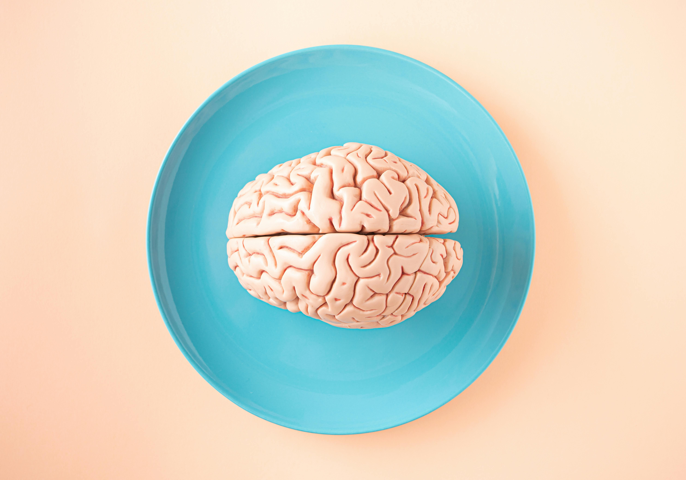

Home
Services
MRI System
CT-Scan
Digital Radiography System
Dental X-Ray System
Ultrasound System
Fluoroscopy X-Ray
Specialties
Well Woman(Under 40 Years)
Well Woman(Over 40 Years)
Well Man(Under 40 Years)
Well Man(Over 40 Years)
Diabetes Profiles
Hypertension Profiles
Gallery
About Us
Contact
NEUROSURGERY DEPARTMENT

MRI SCAN